Cardápio
O que a Mafra faz, além dos bolos de festa. Para saber sabores e o que tem hoje, é só chamar.
Bolos e tortas
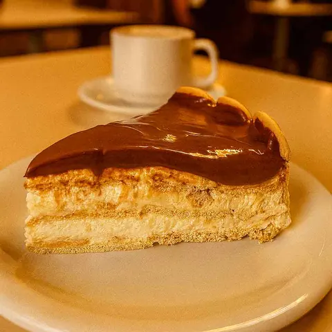
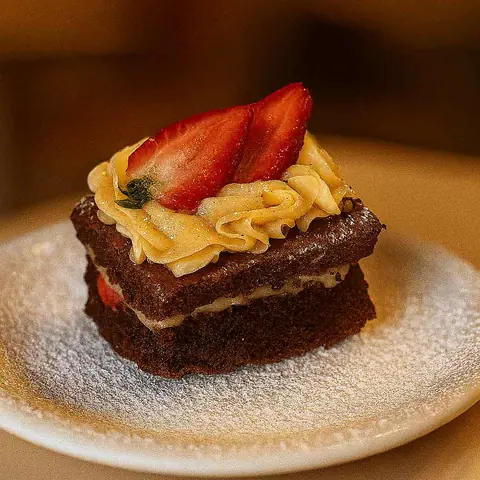
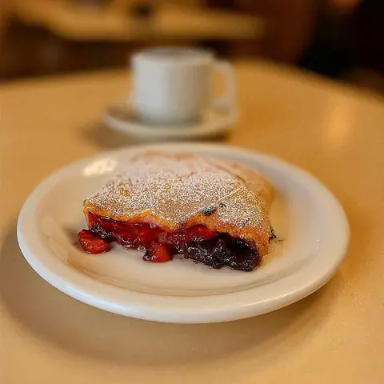
- Bolo Confeitado de Morango
- Bolo Marta Rocha
- Bolo Mineiro com Cobertura
- Bolo de Aipim Tradicional
Doces
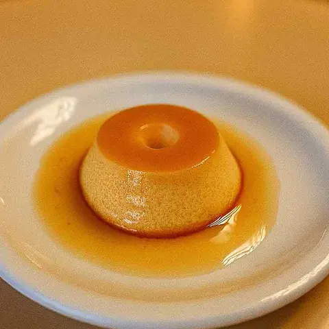
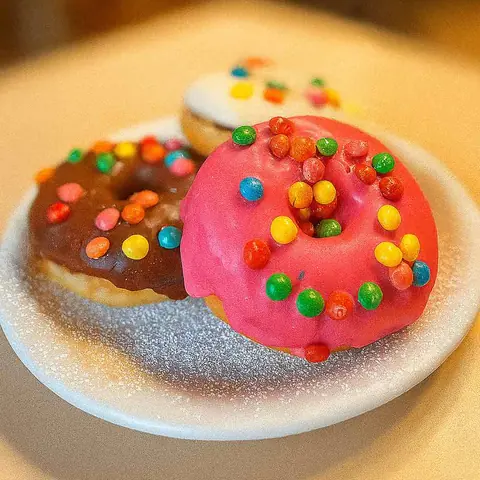
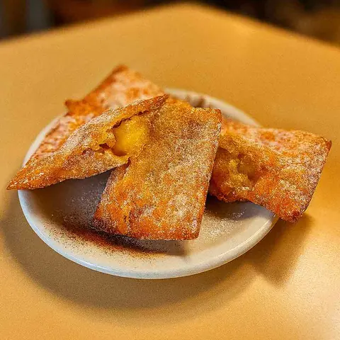
- Cucas
- Chineques
- Brigadeiros
- Croissant Morango e Nutella
Salgados e tortas salgadas
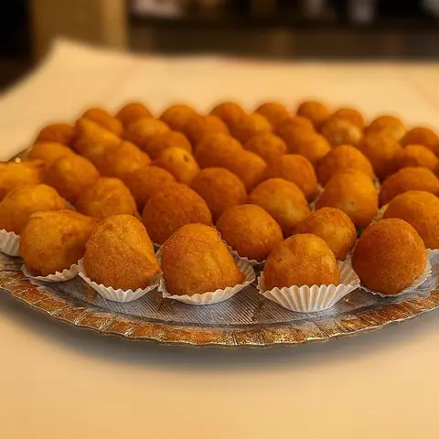
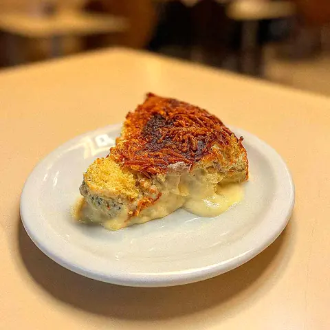
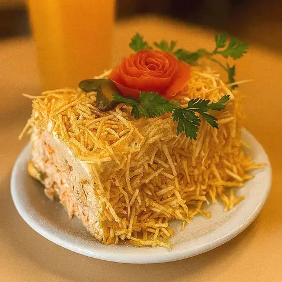
- Empadão artesanal
- Pastel Assado
- Doguinho Recheado com Salsicha
- Coxinhas
- Risoles
- Bolinhas de queijo
Pães e lanches
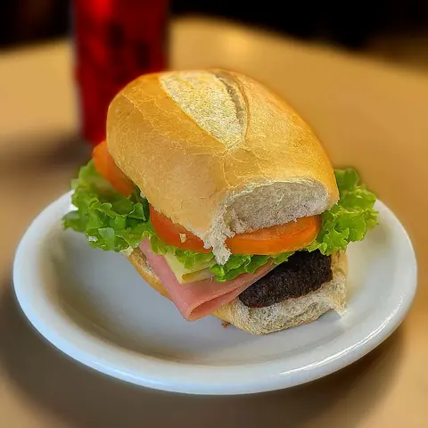
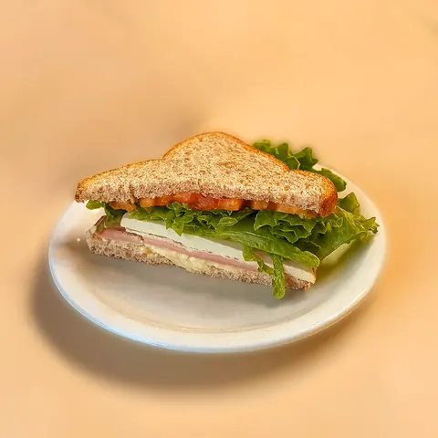
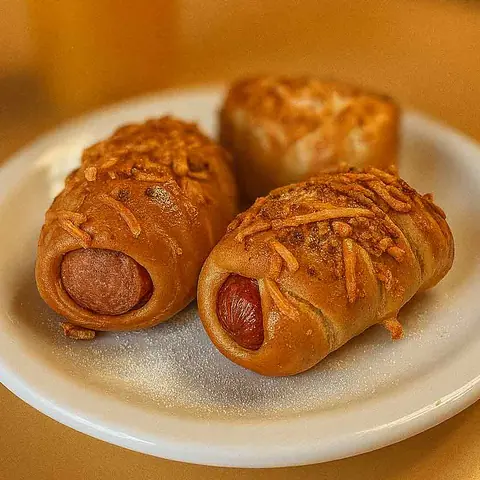
- Pão de Batata Recheado Duo Sabores
- Pão de Queijo Mineiro Artesanal
- Pães de fermentação natural
- Pães coloniais
- Pães integrais